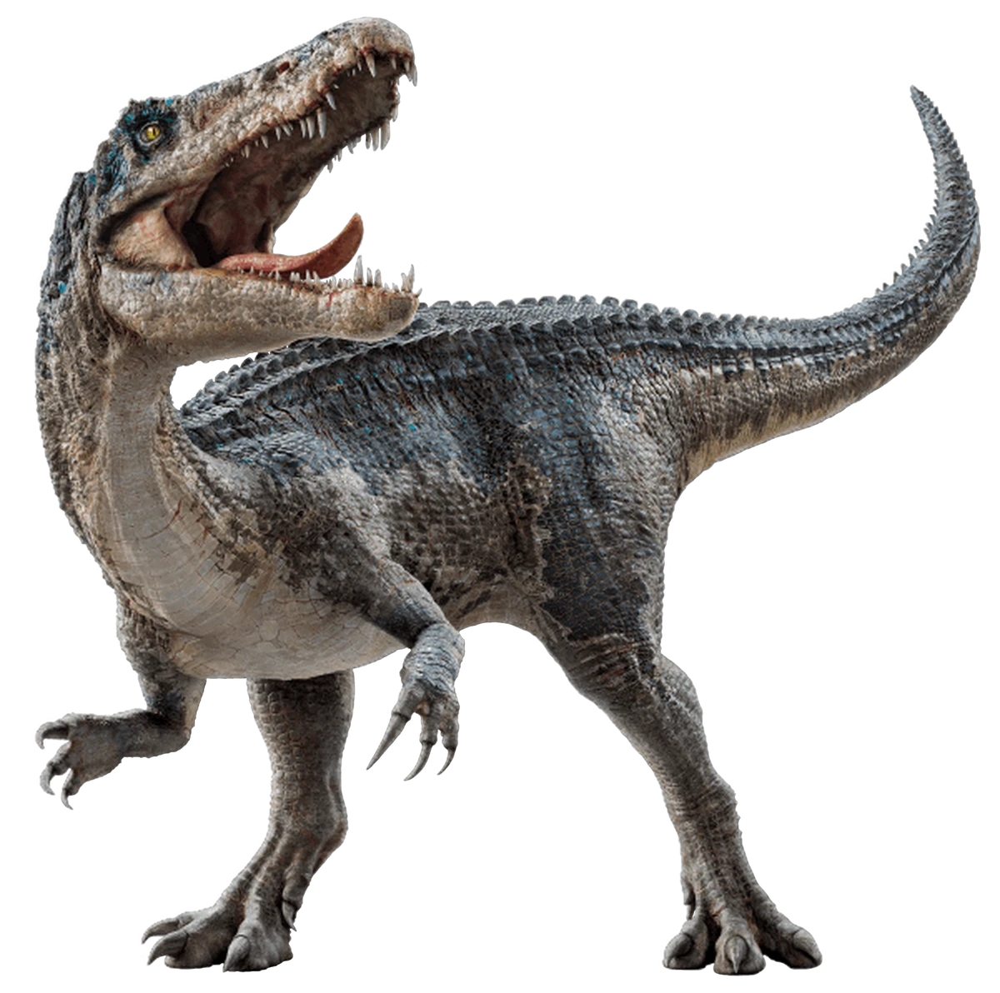

Baryonyx
Período: Cretácico Inferior
Altura: 2.5 m
Lonxitude: 8.5 m
Dieta: piscívora
Baryonyx foi un dinosauro que viviu hai aproximadamente 125 millóns de anos. Medía uns 9 metros de longo e distinguíase pola súa gran garra no polgar e o seu fociño alongado, semellante ao dun crocodilo. Cazaba peixes e pequenos vertebrados en ambientes acuáticos.
